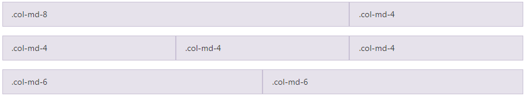
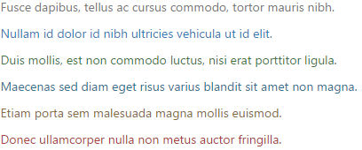
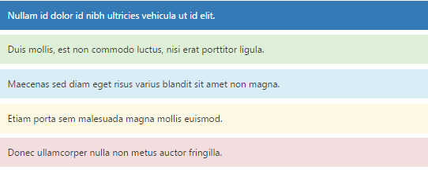
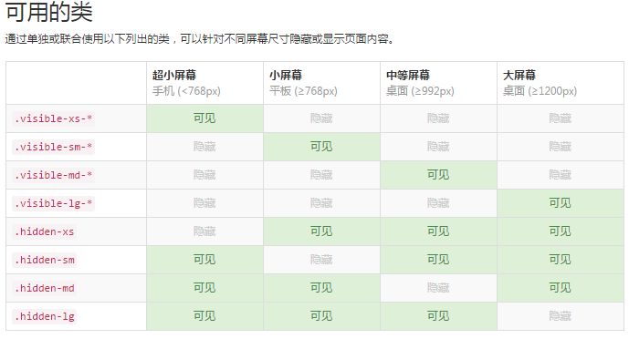

回到
回到顶部
bootstrap
响应式1.容器：
.container: 用于固定宽度并支持响应式布局的容器
container-fluid:流体式布局,可以将固定宽度的栅格布局转换为 100% 宽度的布局
.container-fluid：类用于 100% 宽度，占据全部视口（viewport）的容器。
2.栅格系统用于通过一系列的行（row）与列（column）的组合来创建页面布局，你的内容就可以放入这些创建好的布局中。下面就介绍一下 Bootstrap 栅格系统的工作原理：
- “行（row）”必须包含在 .container （固定宽度）或 .container-fluid （100% 宽度）中，以便为其赋予合适的排列（aligment）和内补（padding）。
- 通过“行（row）”在水平方向创建一组“列（column）”。
- 你的内容应当放置于“列（column）”内，并且，只有“列（column）”可以作为行（row）”的直接子元素。
- 类似 .row 和 .col-xs-4 这种预定义的类，可以用来快速创建栅格布局。Bootstrap 源码中定义的 mixin 也可以用来创建语义化的布局。
- 通过为“列（column）”设置 padding 属性，从而创建列与列之间的间隔（gutter）。通过为 .row 元素设置负值 margin 从而抵消掉为 .container 元素设置的padding，也就间接为“行（row）”所包含的“列（column）”抵消掉了padding。
- 负值的 margin就是下面的示例为什么是向外突出的原因。在栅格列中的内容排成一行。
- 栅格系统中的列是通过指定1到12的值来表示其跨越的范围。例如，三个等宽的列可以使用三个 .col-xs-4 来创建。
- 如果一“行（row）”中包含了的“列（column）”大于 12，多余的“列（column）”所在的元素将被作为一个整体另起一行排列。
- 栅格类适用于与屏幕宽度大于或等于分界点大小的设备 ， 并且针对小屏幕设备覆盖栅格类。 因此，在元素上应用任何 .col-md-* 栅格类适用于与屏幕宽度大于或等于分界点大小的设备 ， 并且针对小屏幕设备覆盖栅格类。 因此，在元素上应用任何 .col-lg-* 不存在， 也影响大屏幕设备。
<div class="row">
<div class="col-md-8">.col-md-8</div>
<div class="col-md-4">.col-md-4</div>
</div>
<div class="row">
<div class="col-md-4">.col-md-4</div>
<div class="col-md-4">.col-md-4</div>
<div class="col-md-4">.col-md-4</div>
</div>
<div class="col-md-4">.col-md-4</div>
<div class="row">
<div class="col-md-6 col-md-offset-3">.col-md-6col-md-offset-3</div>
</div>
效果：

3.排版
标题
<h1>h1. Bootstrap heading</h1>
<h2>h2. Bootstrap heading</h2>
<h3>h3. Bootstrap heading</h3>
<h4>h4. Bootstrap heading</h4>
<h5>h5. Bootstrap heading</h5>
<h6>h6. Bootstrap heading</h6>
页面主体
Bootstrap 将全局 font-size 设置为 14px，line-height 设置为 1.428。这些属性直接赋予 body 元素和所有段落元素。另外，p （段落）元素还被设置了等于 1/2 行高（即 10px）的底部外边距（margin）。
<p>.....</p>中心内容
通过添加 .lead 类可以让段落突出显示。
<p class="lead">.....</p>内联文本元素 标记文本
有淡背景色
You can use the mark tag to <mark>highlight</mark> text.被删除的文本
对于被删除的文本使用 <del> 标签。
You can use the mark tag to <del>highlight</del> text.无用文本
对于没用的文本使用 <s> 标签。(效果和<del>一样)
插入文本：<ins>额外插入的文本,下划线
带下划线的文本：<u>带下划线
小号文本：<small>其内的文本将被设置为父容器字体大小的 85%。，.small 类以代替任何 <small> 元素。
着重：<strong>加粗
斜体：<em>
对齐：
<p class="text-left">Left aligned text.</p>
<p class="text-center">Center aligned text.</p>
<p class="text-right">Right aligned text.</p>
<p class="text-justify">Justified text.</p>
<p class="text-nowrap">No wrap text.</p>
改变大小写：
<p class="text-lowercase">Lowercased text.</p>
<p class="text-uppercase">Uppercased text.</p>
<p class="text-capitalize">Capitalized text.</p>
缩略语：<abbr>当鼠标悬停在缩写和缩写词上时就会显示完整内容
<abbr title="attribute">attr</abbr>
首字母缩略语:为缩略语添加 .initialism 类，可以让 font-size 变得稍微小些。
<abbr title="attribute" class="initialism">attr</abbr>
地址:让联系信息以最接近日常使用的格式呈现。在每行结尾添加 <br> 可以保留需要的样式。
<address>
<strong>Twitter, Inc.</strong><br>
1355 Market Street, Suite 900<br>
San Francisco, CA 94103<br>
<abbr title="Phone">P:</abbr> (123) 456-7890
</address>
默认样式的引用：将任何 HTML 元素包裹在<blockquote>中即可表现为引用样式。对于直接引用，我们建议用 <p>标签。
多种引用样式：通过赋予 .blockquote-reverse 类可以让引用呈现内容右对齐的效果。
列表无序列表:排列顺序无关紧要的一列元素。<ul><li></li></ul>
有序列表:顺序至关重要的一组元素。<ol><li></li></ol>
无样式列表:.list-unstyled只针对直接子元素
内联列表:.list-inline将所有元素放置于同一行。
描述:带有描述的短语列表。
<dl>
<dt>...</dt>
<dd>...</dd>
</dl>
内联列表:.dl-horizontal 可以让 <dl> 内的短语及其描述排在一行。开始是像 <dl> 的默认样式堆叠在一起，随着导航条逐渐展开而排列在一行。
<dl class="dl-horizontal">
<dt>...</dt>
<dd>...</dd>
</dl>
4.代码
内联代码:通过 <code> 标签包裹内联样式的代码片段。
用户输入:通过 <kbd> 标签标记用户通过键盘输入的内容。
代码块:多行代码可以使用<pre>标签。为了正确的展示代码，注意将尖括号做转义处理。
变量:通过<var>标签标记变量。
程序输出:通过 <samp> 标签来标记程序输出的内容。
5.表格基本实例:为任意<table>标签添加 .table 类可以为其赋予基本的样式 — 少量的内补（padding）和水平方向的分隔线。
条纹状表格:.table-striped
带边框的表格:.table-bordered
鼠标悬停:.table-hover
紧缩表格:通过添加 .table-condensed 类可以让表格更加紧凑，单元格中的内补（padding）均会减半。
鼠标悬停:.table-hover
状态类:通过这些状态类可以为行或单元格设置颜色。
.active鼠标悬停在行或单元格上时所设置的颜色
.success 标识成功或积极的动作
.info标识普通的提示信息或动作
.warning标识警告或需要用户注意
.danger标识危险或潜在的带来负面影响的动作
响应式表格将任何 .table 元素包裹在 .table-responsive 元素内，即可创建响应式表格，其会在小屏幕设备上（小于768px）水平滚动。当屏幕大于 768px 宽度时，水平滚动条消失。
6.表单单独的表单控件会被自动赋予一些全局样式。所有设置了 .form-control 类的 input、textarea 和 select 元素都将被默认设置宽度属性为 width: 100%;。 将 label 元素和前面提到的控件包裹在 .form-group 中可以获得最好的排列。
内联表单为 <form> 元素添加 .form-inline 类可使其内容左对齐并且表现为 inline-block 级别的控件。只适用于视口（viewport）至少在 768px 宽度时（视口宽度再小的话就会使表单折叠）。
水平排列的表单通过为表单添加 .form-horizontal 类，并联合使用 Bootstrap 预置的栅格类，可以将 label 标签和控件组水平并排布局。这样做将改变 .form-group 的行为，使其表现为栅格系统中的行（row），因此就无需再额外添加 .row 了。
被支持的控件输入框input、文本域textarea、多选和单选框
内联单选和多选框通过将 .checkbox-inline 或 .radio-inline 类应用到一系列的多选框（checkbox）或单选框（radio）控件上，可以使这些控件排列在一行。
不带label文本的Checkbox 和 radio如果需要 <label> 内没有文字，输入框（input）正是你所期望的。 目前只适用于非内联的 checkbox 和 radio。 请记住，仍然需要为使用辅助技术的用户提供某种形式的 label（例如，使用 aria-label）。
下拉列表（select）.form-control
静态控件如果需要在表单中将一行纯文本和 label 元素放置于同一行，为 <p> 元素添加 .form-control-static 类即可。
焦点状态我们将某些表单控件的默认 outline 样式移除，然后对 :focus 状态赋予 box-shadow 属性。
禁用状态为输入框设置 disabled 属性可以禁止其与用户有任何交互（焦点、输入等）。被禁用的输入框颜色更浅，并且还添加了 not-allowed 鼠标状态。
被禁用的 fieldset:为<fieldset>设置 disabled 属性,可以禁用 <fieldset> 中包含的所有控件。
只读状态:为输入框设置 readonly 属性可以禁止用户修改输入框中的内容。处于只读状态的输入框颜色更浅（就像被禁用的输入框一样），但是仍然保留标准的鼠标状态。
帮助文本：窗体控件的块级帮助文本。
校验状态：Bootstrap 对表单控件的校验状态，如 error、warning 和 success 状态，都定义了样式。使用时，添加 .has-warning、.has-error 或 .has-success 类到这些控件的父元素即可。任何包含在此元素之内的 .control-label、.form-control 和 .help-block 元素都将接受这些校验状态的样式。
添加额外的图标：你还可以针对校验状态为输入框添加额外的图标。只需设置相应的 .has-feedback 类并添加正确的图标即可。
控件尺寸：通过 .input-lg 类似的类可以为控件设置高度，通过 .col-lg-* 类似的类可以为控件设置宽度。
高度尺寸：创建大一些或小一些的表单控件以匹配按钮尺寸。
水平排列的表单组的尺寸：通过添加 .form-group-lg 或 .form-group-sm 类，为 .form-horizontal 包裹的 label 元素和表单控件快速设置尺寸。
调整列（column）尺寸：用栅格系统中的列（column）包裹输入框或其任何父元素，都可很容易的为其设置宽度。
7.按钮.btn <a>、<button> 或 <input>元素添加按钮类（button class）即可使用 Bootstrap 提供的样式。
预定义样式：.btn-default （默认样式）
.btn-primary （首选项）
.btn-success（成功）Success
.btn-success（成功）Success
.btn-info （一般信息）Info
.btn-warning （警告）Warning
.btn-danger （危险）Danger
. btn-link （链接）Link
尺寸：.btn-lg（大按钮）Large button
.btn-primary（默认尺寸）Default button
.btn-sm（小按钮）Small button
.btn-xs（超小尺寸）Extra small button
通过给按钮添加 .btn-block 类可以将其拉伸至父元素100%的宽度，而且按钮也变为了块级（block）元素。
激活状态：.active
禁用状态：disabled="disabled"
8.图片响应式图片：.img-responsive 类可以让图片支持响应式布局。
图片形状：.img-rounded 给图片添加 border-radius:6px 的圆角。
.img-circle 圆形
.img-thumbnail 添加一些内边距（padding）和一个灰色的边框。
情境文本颜色（改变字体颜色）：.text-muted、.text-primary、.text-success、.text-info、.text-warning、.text-danger
具体效果:

情境背景色：.bg-primary、.bg-success、.bg-info、.bg-warning、.bg-danger
具体效果:

关闭按钮：<button type="button" class="close" aria-label="Close"><span aria-hidden="true">×</span></button>
三角符号：<span class="caret"></span>
快速浮动：.pull-left、.pull-right
让内容块居中：.center-block
清除浮动：.clearfix
显示或隐藏内容：.show、.hidden
图片替换：..text-hide
10.响应式工具 